London-based photographer drawn to people, places and the stories found in everyday life. My work moves between portraiture, documentary and commercial photography, always looking for something honest, considered and human.
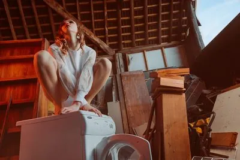
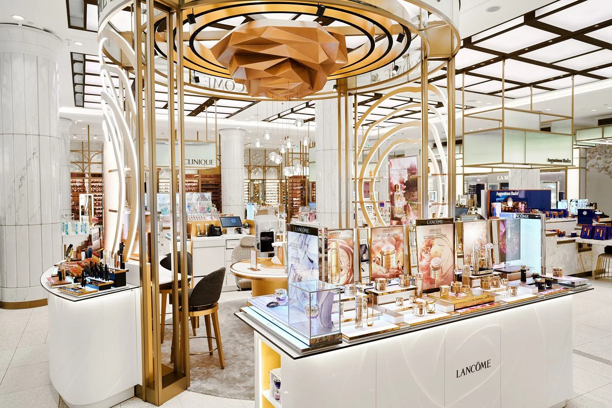
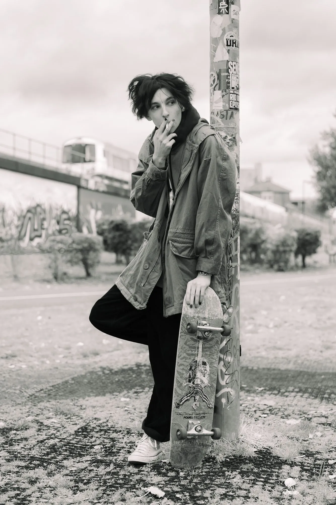
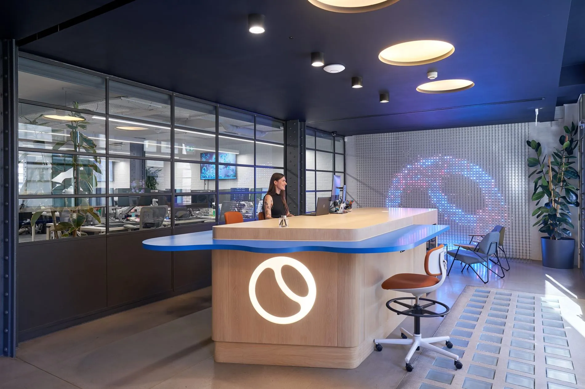
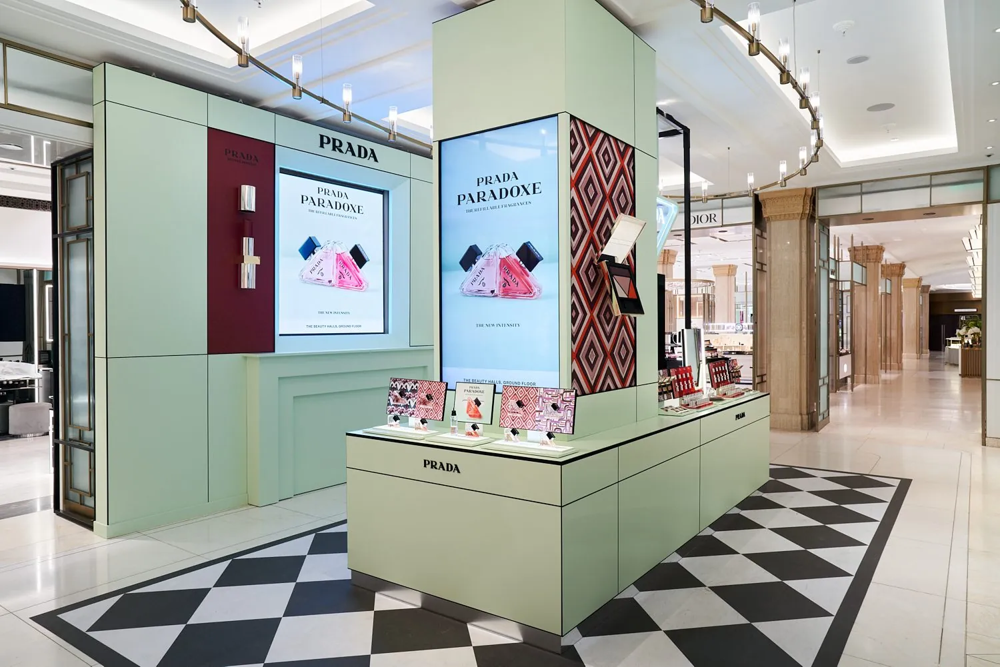
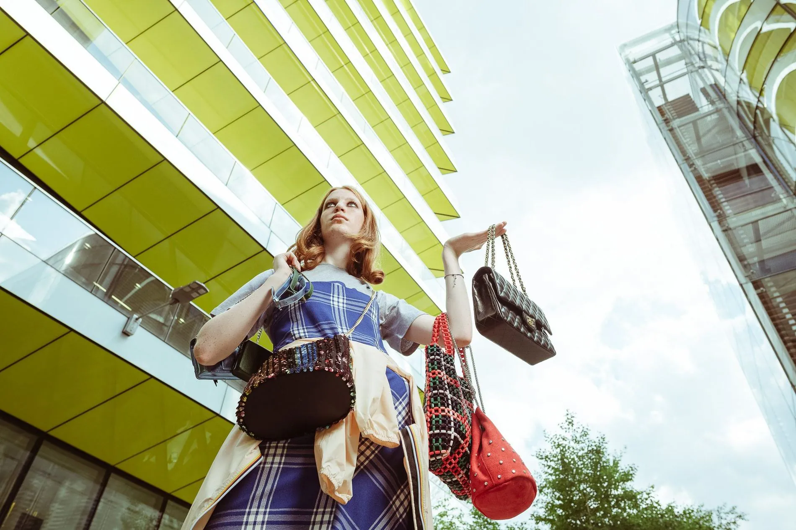
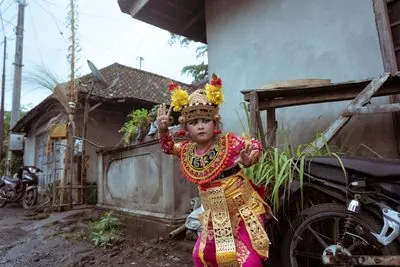
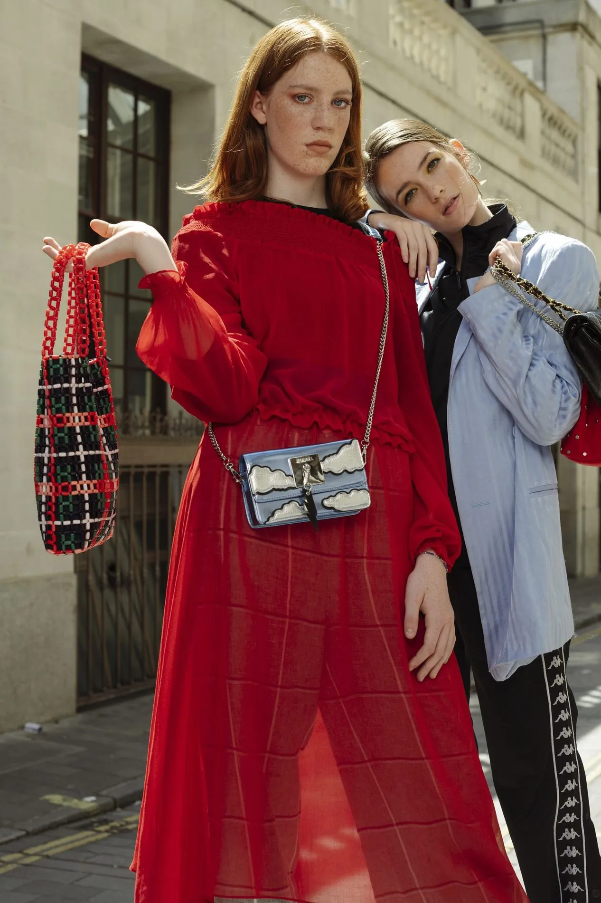
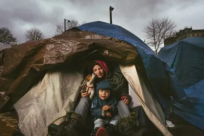
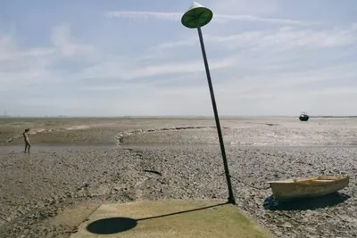
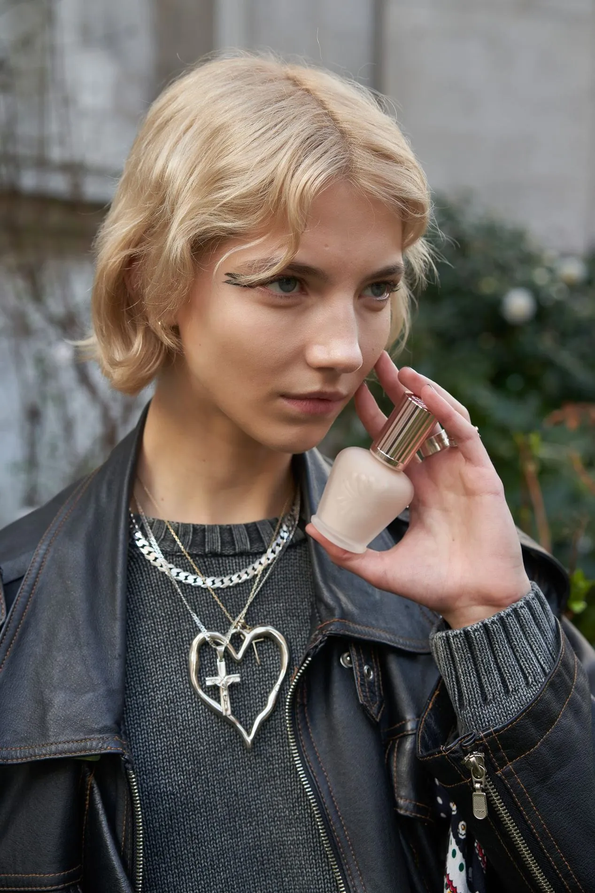
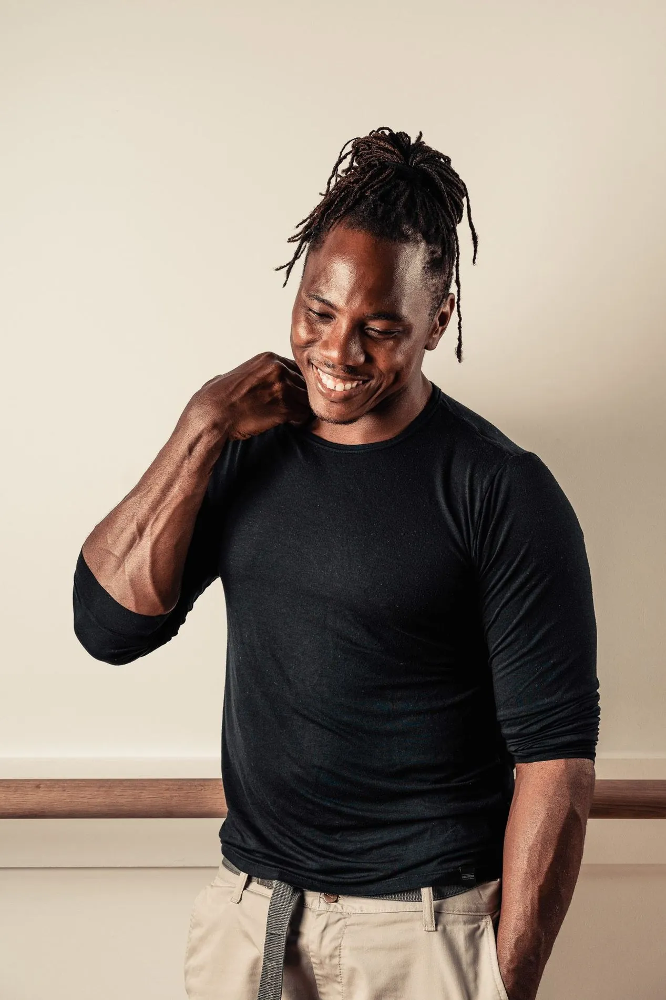
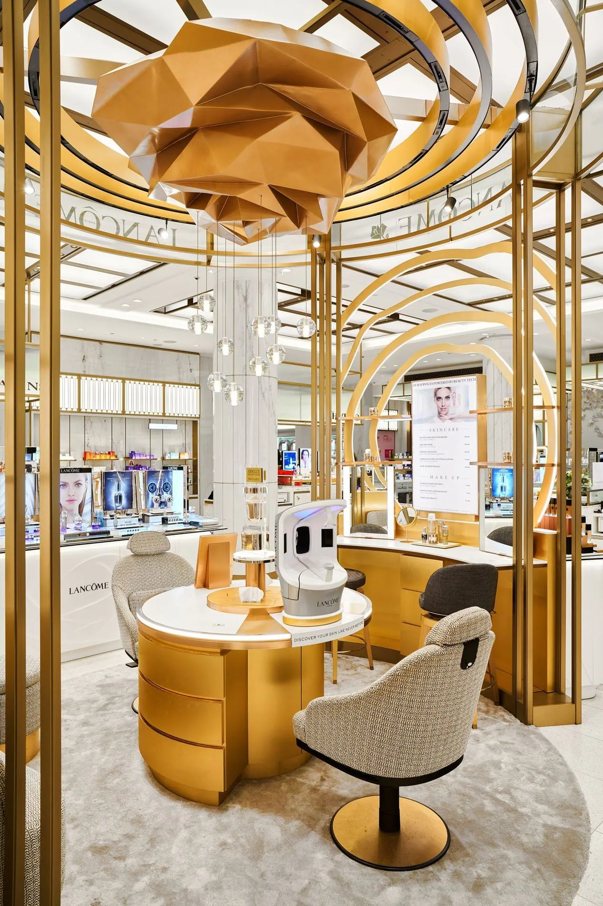
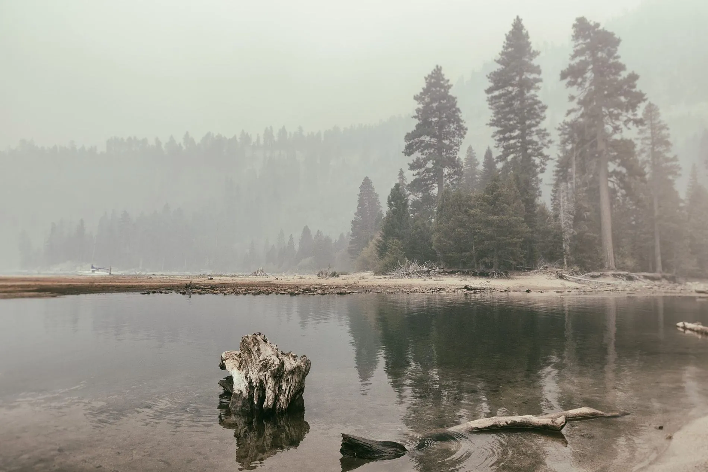
Every frame is a decision — the people, places and moments behind the work.